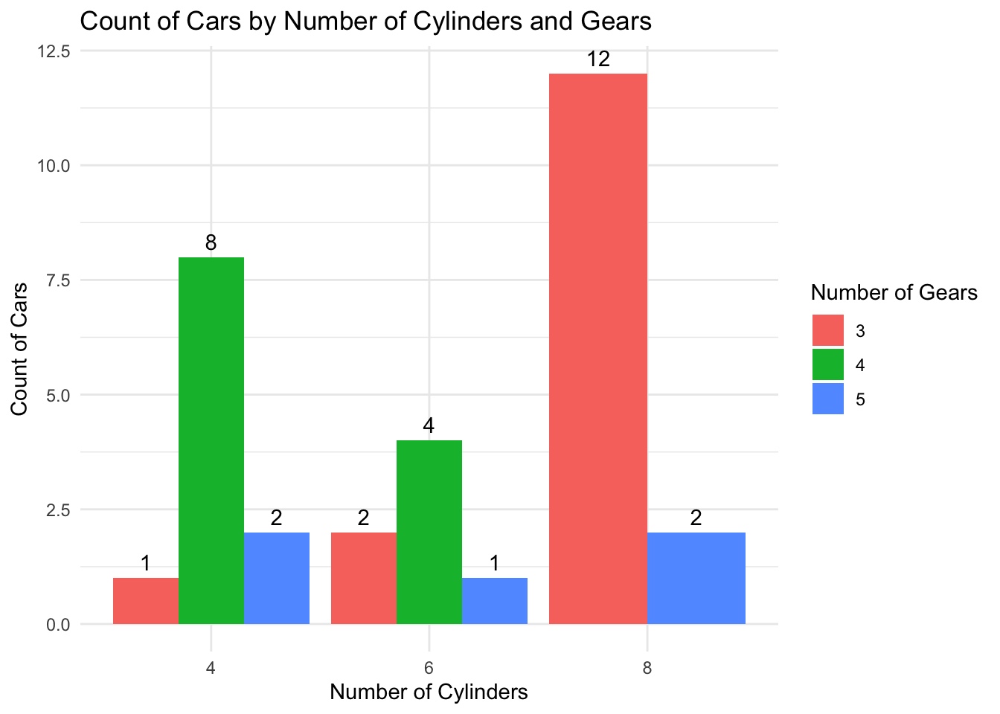
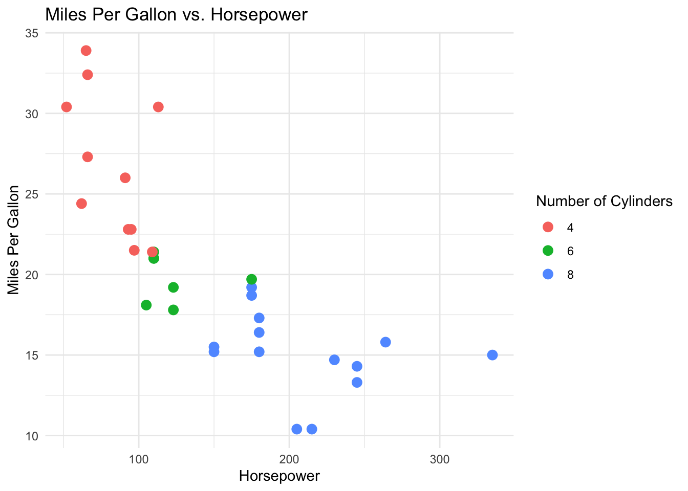
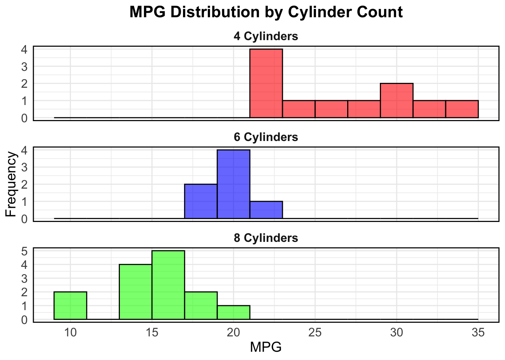
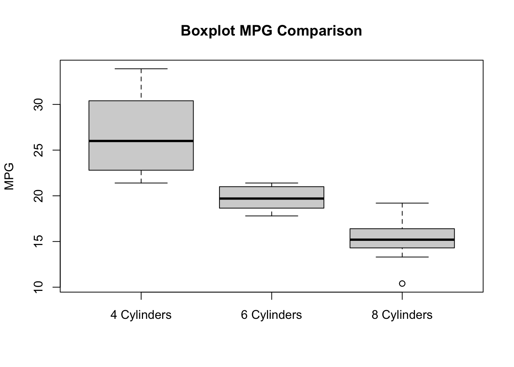
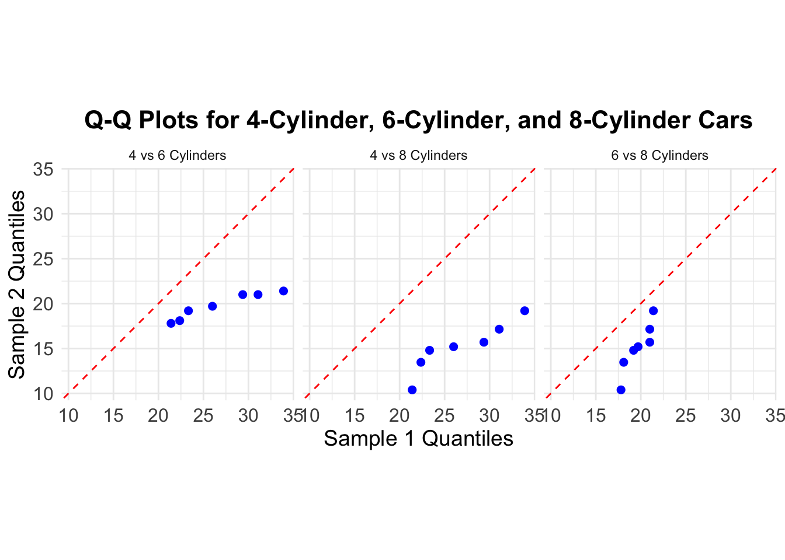

'data.frame': 32 obs. of 11 variables:
$ mpg : num 21 21 22.8 21.4 18.7 18.1 14.3 24.4 22.8 19.2 ...
$ cyl : num 6 6 4 6 8 6 8 4 4 6 ...
$ disp: num 160 160 108 258 360 ...
$ hp : num 110 110 93 110 175 105 245 62 95 123 ...
$ drat: num 3.9 3.9 3.85 3.08 3.15 2.76 3.21 3.69 3.92 3.92 ...
$ wt : num 2.62 2.88 2.32 3.21 3.44 ...
$ qsec: num 16.5 17 18.6 19.4 17 ...
$ vs : num 0 0 1 1 0 1 0 1 1 1 ...
$ am : num 1 1 1 0 0 0 0 0 0 0 ...
$ gear: num 4 4 4 3 3 3 3 4 4 4 ...
$ carb: num 4 4 1 1 2 1 4 2 2 4 ...23 Welch’s Anova
23.1 Packages for this lesson
We will need to load tidyverse (which contains ggplot2, dplyr and tibble), gridExtra, emmeans and e1071. We are going to use the mtcars dataset included in r studio.
23.2 Introduction
Welch’s ANOVA, an extension of Welch’s t-test, is designed to compare the means of three or more groups when the assumption of equal variances (homoscedasticity) is violated. Unlike the traditional ANOVA, which assumes that the variances across groups are equal, Welch’s ANOVA is robust to heteroscedasticity, making it more reliable when dealing with real-world data that often exhibit unequal variances.
This statistical method is particularly useful in fields such as biology, medicine, and social sciences, where differences in group variances are common. By adjusting the degrees of freedom and using a modified F-ratio, Welch’s ANOVA provides a more accurate p-value for hypothesis testing under these conditions. This adaptation enhances the validity of the conclusions drawn from the data, ensuring that the results are not unduly influenced by variance inequality (Liu, 2015a)
23.2.1 When to use Welch´s Anova
Welch’s ANOVA is particularly useful in the following scenarios:
Unequal Variances (Heteroscedasticity):
When the variances across the groups being compared are not equal, Welch’s ANOVA should be used. Traditional ANOVA assumes homoscedasticity (equal variances), and when this assumption is violated, it can lead to inaccurate results. Welch’s ANOVA adjusts for unequal variances, providing more reliable results (Delacre, Leys, Mora, & Lakens, 2019).
Unequal Sample Sizes:
When the groups have different sample sizes, Welch’s ANOVA is more appropriate. Traditional ANOVA is sensitive to unequal sample sizes, especially when combined with unequal variances. Welch’s ANOVA is robust to these differences, ensuring that the statistical conclusions remain valid (Delacre et al., 2019).
Comparing Means of Three or More Groups:
Similar to the traditional ANOVA, Welch’s ANOVA is used when you need to compare the means of three or more groups. It extends the principles of Welch’s t-test (which compares two groups) to multiple groups (Delacre et al., 2019).
Real-World Data with Variability:
In practical applications, data often do not meet the strict assumptions of equal variances and equal sample sizes. Welch’s ANOVA is more flexible and can handle the variability often found in real-world data, making it a preferred choice in many applied research settings.
Increased Reliability:
When you require a statistical test that remains robust under less-than-ideal conditions, such as non-normal distributions and unequal group variances, Welch’s ANOVA provides increased reliability and accuracy compared to traditional ANOVA (Delacre et al., 2019).
Practical Examples
Medical Research: Comparing the effectiveness of different treatments across patient groups where the variance in treatment effects is different.
Educational Studies: Analyzing test scores from students in different schools or classes where the variability in scores differs.
Biological Experiments: Evaluating the growth of plants under different treatments when the growth variability is not consistent across treatments.
By using Welch’s ANOVA in these scenarios, researchers can ensure their statistical analyses are valid and robust, leading to more accurate and trustworthy conclusions.
23.3 Assumptions of Welch´s Anova
Welch’s ANOVA, like any statistical test, has specific assumptions that need to be met to ensure valid and reliable results. However, it relaxes some of the assumptions required by traditional ANOVA, making it more robust to real-world data. Here are the key assumptions of Welch’s ANOVA:
Independence of Observations:
The observations within each group and between groups should be independent. This means that the data points collected from different groups do not influence each other.
Normality:
The dependent variable should be approximately normally distributed within each group. Welch’s ANOVA is fairly robust to deviations from normality, especially with larger sample sizes. However, significant departures from normality can affect the results, so it’s important to assess the distribution of the data.
Unequal Variances:
Unlike traditional ANOVA, Welch’s ANOVA does not assume equal variances across groups. It is specifically designed to handle heteroscedasticity (unequal variances) by adjusting the degrees of freedom and modifying the F-ratio. This makes Welch’s ANOVA more appropriate when the homogeneity of variances assumption is violated.(Liu, 2015b).
The formula for the Welch’s anova is given by:
\[ F = \frac{\sum_{i=1}^{k} \frac{n_i (\bar{X}_i - \bar{X})^2}{s_i^2}}{1 + \frac{2(k-2)}{k^2 - 1} \sum_{i=1}^{k} \left( \frac{1}{n_i - 1} \right) \left( \frac{s_i^2}{s_{avg}^2} \right)^2 } \]
Where: \[\begin{align*} \bar{X}_i & \text{ is the sample mean of the i-th group} \\ \bar{X} & \text{ is the grand mean (overall mean)} \\ n_i & \text{ is the sample size of the i-th group} \\ s_i^2 & \text{ is the sample variance of the i-th group} \\ s_{avg}^2 & \text{ is the average of the sample variances, } s_{avg}^2 = \frac{1}{k} \sum_{i=1}^{k} s_i^2 \\ k & \text{ is the number of groups} \end{align*}\]
The degrees of freedom for the numerator and the denominator are given by (Liu, 2015b):
\[ \text{df}_1 = k - 1 \]
\[ \text{df}_2 = \frac{ \left( 1 + \frac{2(k-2)}{k^2 - 1} \sum_{i=1}^{k} \left( \frac{1}{n_i - 1} \right) \left( \frac{s_i^2}{s_{avg}^2} \right)^2 \right)^2 }{ \frac{2(k-2)}{k^2 - 1} \sum_{i=1}^{k} \left( \frac{1}{(n_i - 1)^2} \right) \left( \frac{s_i^2}{s_{avg}^2} \right)^2 } \]
23.4 Comparison of Traditional ANOVA and Welch’s ANOVA
Welch’s ANOVA and traditional ANOVA are both used to compare the means of three or more groups, but they have different assumptions and are suitable for different scenarios. Here’s a detailed comparison:
Comparison Summary
| Aspect | Traditional ANOVA | Welch’s ANOVA |
|---|---|---|
| Assumptions | Equal Variances (Homoscedasticity): Assumes that the variances across groups are equal. Normality: Assumes that the data within each group are normally distributed. Independence: Assumes that the observations are independent of each other. |
Unequal Variances (Heteroscedasticity): Does not assume equal variances across groups, making it suitable for data with heteroscedasticity. Normality: Assumes that the data within each group are normally distributed, similar to traditional ANOVA. Independence: Assumes that the observations are independent of each other. |
| Robustness to Assumptions | Sensitive to Unequal Variances: If the assumption of equal variances is violated, the results of traditional ANOVA can be misleading. Robust to Normality: Fairly robust to deviations from normality, especially with larger sample sizes (Liu, 2015b). |
Robust to Unequal Variances: Specifically designed to handle unequal variances, providing more reliable results when variances differ across groups. Robust to Normality: Similar robustness to normality as traditional ANOVA, but still requires approximate normality within groups (Liu, 2015b). |
| Degrees of Freedom | Degrees of freedom for the numerator (df1) is k-1, where k is the number of groups. Degrees of freedom for the denominator (df2) is N-k, where N is the total number of observations (Liu, 2015b). |
Degrees of freedom for the numerator (df1) is k-1, similar to traditional ANOVA. Degrees of freedom for the denominator (df2) is adjusted based on the variances and sample sizes of the groups, making it more complex and generally lower than N-k (Liu, 2015b). |
| Application Scenarios | Use when you have equal variances across groups and possibly equal sample sizes. Suitable for controlled experimental designs where assumptions can be maintained. | Use when variances across groups are unequal or when sample sizes are unequal. Suitable for real-world data where assumptions of traditional ANOVA are often violated. |
23.5 Reliability of Welch’s ANOVA
Welch’s ANOVA is designed to be a robust alternative to traditional ANOVA, particularly when dealing with unequal variances across groups. Here’s a detailed look at factors affecting the reliability of Welch’s ANOVA, including minimum sample size, power, effect size, variance, significance level, and non-normality.
1. Minimum Sample Size
Small Sample Sizes: Welch’s ANOVA can be used with small sample sizes, but its power is limited with very small samples (e.g., fewer than 5 observations per group). In such cases, the test might not detect significant differences even if they exist.
Recommended Minimum: A common recommendation is to have at least 10-15 observations per group. This ensures a reasonable level of reliability and power. This isn’t a strict rule but a guideline to aim for.
2. Power and Effect Size
Power Analysis: Power is the probability of correctly rejecting the null hypothesis when it is false. To determine the appropriate sample size for a specific context, you can perform a power analysis. This involves specifying the expected effect size, the desired power (commonly 0.80), and the significance level (commonly 0.05).
Effect Size: Larger effect sizes (i.e., larger differences between group means) can be detected with smaller sample sizes. Smaller effect sizes require larger sample sizes to be detected. Power analysis can help estimate the necessary sample size to achieve sufficient power to detect an effect.
3. Variance
Unequal Variances: Welch’s ANOVA is specifically designed to handle unequal variances. It adjusts the degrees of freedom and uses a modified F-ratio to account for this heteroscedasticity, providing more accurate p-values.
Large Variance Differences: When variances between groups are very different, larger sample sizes may be needed to ensure the robustness of the test.
4. Significance Level
Common Significance Levels: The significance level (α) is the threshold for determining statistical significance, with common values being 0.05, 0.01, and 0.10.
Impact of Significance Level: Lowering the significance level (e.g., from 0.05 to 0.01) makes the test more stringent, reducing the chance of Type I errors (false positives). However, this typically requires larger sample sizes to maintain power.
Type I and Type II Errors: Balancing the significance level and power is crucial to minimize both Type I errors (incorrectly rejecting the null hypothesis) and Type II errors (failing to reject a false null hypothesis).
5. Non-Normality
Moderate Robustness: Welch’s ANOVA is moderately robust to deviations from normality, especially as sample sizes increase. This robustness is due to the Central Limit Theorem, which ensures that the sampling distribution of the test statistic approaches normality with larger sample sizes.
Severe Non-Normality: For small sample sizes, significant departures from normality can affect the reliability of Welch’s ANOVA. In such cases, the test may not perform well, and the results might be less trustworthy.
Alternative Approaches: When normality is a concern, consider non-parametric alternatives like the Kruskal-Wallis test, which does not assume normality.
Guidelines for Choosing Welch’s ANOVA or Kruskal-Wallis Test
- Uses Welch’s ANOVA if all sample sizes are ≥ 30 or Shapiro-Wilk test is ≥ 0.05 (normal distribution).
- Uses Welch’s ANOVA if all sample sizes are ≥ 15 and the p-values from the Shapiro-Wilk test are > 0.01 (indicating only moderate deviations from normality).
- Uses the Kruskal-Wallis test if any sample size is < 15 or if the p-values from the Shapiro-Wilk test are ≤ 0.01 (indicating severe deviations from normality).
Practical Recommendations:
Assess Normality and Variance: Before applying Welch’s ANOVA, assess the normality and variances of your data. Use tests like Shapiro-Wilk for normality and Levene’s test for variance homogeneity. Perform Power Analysis: Conduct a power analysis to determine the appropriate sample size for your study, considering the expected effect size and desired power. Consider Sample Size Guidelines: Aim for at least 10-15 observations per group to ensure reasonable power and reliability.
23.5.1 Let’s Remember
Let’s remember
The significance level, denoted as α, is a threshold in hypothesis testing that determines whether to reject the null hypothesis. It is the probability of making a Type I error, which occurs when the null hypothesis is true but incorrectly rejected. Common values for α are 0.05, 0.01, and 0.10 (Labovitz, 2017).
For α = 0.05, there is a 5% chance of rejecting the null hypothesis when it is true. If the p-value from a statistical test is less than or equal to α, we reject the null hypothesis; if it is greater, we do not reject the null hypothesis.
The Central Limit Theorem (CLT) states that the distribution of the sample mean will approximate a normal distribution as the sample size becomes large, regardless of the population’s distribution, provided the samples are independent and identically distributed (Kwak & Kim, 2017).
In the context of Welch’s test, the CLT implies that as the sample size increases, the distribution of the test statistic approaches normality, reducing the impact of non-normality in the original data. Thus, Welch’s test becomes more reliable with larger samples because the sampling distribution of the mean difference tends to be normal.
If the samples are not identically distributed, meaning they come from populations with different distributions, the assumptions underlying the Central Limit Theorem (CLT) and many statistical tests, including Welch’s t-test, may be violated. This can have several consequences:
- Reduced Accuracy: The approximation to the normal distribution for the sample mean may not hold, leading to inaccurate p-values and confidence intervals.
- Increased Type I and Type II Errors: There may be an increased risk of Type I errors (incorrectly rejecting a true null hypothesis) and Type II errors (failing to reject a false null hypothesis).
- Biased Results: The test results may be biased, reflecting the differences in the underlying distributions rather than the true differences between the population means (Ruxton, 2006).
23.5.2 Suspecting Different Variances:
You might suspect different variances when comparing groups (samples) and their spread appears noticeably different. For example, if one group’s data points are more dispersed than the others, it could indicate unequal variances.The welch´s Anova don´t need equal variances to perform well but you can asses variances with graphical methods and using the Levene´s test.
23.5.3 Assessing normality:
Shapiro-Wilk Test: Purpose: Determines if a sample comes from a normally distributed population. Suitability for Small Samples: Good power even with small sample sizes (< 50). How It Works: Compares the sample data to a normal distribution. Interpretation: If p-value < chosen alpha level, data is not normally distributed. Advantages: Sensitive to deviations in both location and shape. Limitations: May detect trivial deviations due to large sample size1 (Razali & Wah, 2011).
Kolmogorov-Smirnov (K-S) Test: Purpose: Compares two samples or tests if a sample matches a reference distribution. Suitability for Small Samples: Useful for small to large sample sizes. How It Works: Quantifies the distance between empirical and reference cumulative distribution functions. Interpretation: Compares observed data to expected distribution. Advantages: Sensitive to differences in both location and shape. Limitations: May not be better than Shapiro-Wilk for small samples (Razali & Wah, 2011).
Anderson-Darling Test: Purpose: Tests if a sample comes from a specific distribution (e.g., normal). Suitability for Small Samples: Similar to Shapiro-Wilk. How It Works: Compares observed data to expected distribution. Interpretation: Reject null hypothesis if p-value < chosen alpha level. Advantages: Generalizes well for various distributions. Limitations: Adjust for parameter estimation if needed (Razali & Wah, 2011).
Graphical Inspection: Plot histograms or box plots for each group. Look for differences in spread!!
23.6 Defyning the question and hypotheses
Null hypothesis (H0): 4 cylinder cars, 6 cylinder cars and 8 cylinder cars have equal miles per galon (mpg) mean. Alternative hypothesis (HA): 4 cylinder cars, 6 cylinder cars and 8 cylinder cars have not equal miles per galon (mpg) mean.
23.7 Dataset visualization
We will use the mtcars dataset in R for this demonstration. This dataset contains various attributes of different car models and at priori we are not sure if the assumptions are meet, so we have to assess the data first:
As we can see, we have a data set with the information about different types of cars, with 11 different variables including miles per gallon (mpg), cylinder (cyl), horse power (hp), etc., and there are 32 observations for each variable.
mpg cyl disp hp
Min. :10.40 Min. :4.000 Min. : 71.1 Min. : 52.0
1st Qu.:15.43 1st Qu.:4.000 1st Qu.:120.8 1st Qu.: 96.5
Median :19.20 Median :6.000 Median :196.3 Median :123.0
Mean :20.09 Mean :6.188 Mean :230.7 Mean :146.7
3rd Qu.:22.80 3rd Qu.:8.000 3rd Qu.:326.0 3rd Qu.:180.0
Max. :33.90 Max. :8.000 Max. :472.0 Max. :335.0
drat wt qsec vs
Min. :2.760 Min. :1.513 Min. :14.50 Min. :0.0000
1st Qu.:3.080 1st Qu.:2.581 1st Qu.:16.89 1st Qu.:0.0000
Median :3.695 Median :3.325 Median :17.71 Median :0.0000
Mean :3.597 Mean :3.217 Mean :17.85 Mean :0.4375
3rd Qu.:3.920 3rd Qu.:3.610 3rd Qu.:18.90 3rd Qu.:1.0000
Max. :4.930 Max. :5.424 Max. :22.90 Max. :1.0000
am gear carb
Min. :0.0000 Min. :3.000 Min. :1.000
1st Qu.:0.0000 1st Qu.:3.000 1st Qu.:2.000
Median :0.0000 Median :4.000 Median :2.000
Mean :0.4062 Mean :3.688 Mean :2.812
3rd Qu.:1.0000 3rd Qu.:4.000 3rd Qu.:4.000
Max. :1.0000 Max. :5.000 Max. :8.000 23.8 Plotting Mtcars data

On this bar graph we observe the count of cars by number of cylinders and gears.

Just to give us an idea of the data set, on this plot we observed the relation between horse power and cylinders. The cars with more cylinders have more hp and probably do less miles per gallon.
23.8.1 Assessing the distribution
Warning: The `size` argument of `element_rect()` is deprecated as of ggplot2 3.4.0.
ℹ Please use the `linewidth` argument instead.
This histogram shows there is a difference distribution on the miles per gallon (MPG) variable between 4, 6 and 8 cylinder cars. 8 and 6 cylinder cars appear to have a normal distribution but 4 cylinder cars not.

This boxplot also shows the difference between the three groups. 4 cylinder cars have a bigger variance on the mpg variable.

The divergence between the red line and the blue points in a Q-Q plot indicates the degree and nature of the difference between the two distributions being compared.
23.8.2 Assessing skewness and kurtosis
### Assessing skewness and kurtosis
#| label: skewness and kurtosis
#| echo: true
#| message: false
# Calculate skewness and kurtosis for mpg_4_cyl
skewness_4_cyl <- skewness(mpg_4_cyl)
kurtosis_4_cyl <- kurtosis(mpg_4_cyl)
# Calculate skewness and kurtosis for mpg_6_cyl
skewness_6_cyl <- skewness(mpg_6_cyl)
kurtosis_6_cyl <- kurtosis(mpg_6_cyl)
# Calculate skewness and kurtosis for mpg_8_cyl
skewness_8_cyl <- skewness(mpg_8_cyl)
kurtosis_8_cyl <- kurtosis(mpg_8_cyl)
# Print the results
cat("Skewness for mpg_4_cyl:", skewness_4_cyl, "\n")Skewness for mpg_4_cyl: 0.2591965 cat("Kurtosis for mpg_4_cyl:", kurtosis_4_cyl, "\n")Kurtosis for mpg_4_cyl: -1.645012 cat("Skewness for mpg_6_cyl:", skewness_6_cyl, "\n")Skewness for mpg_6_cyl: -0.1583137 cat("Kurtosis for mpg_6_cyl:", kurtosis_6_cyl, "\n")Kurtosis for mpg_6_cyl: -1.906971 cat("Skewness for mpg_8_cyl:", skewness_8_cyl, "\n")Skewness for mpg_8_cyl: -0.3628186 cat("Kurtosis for mpg_8_cyl:", kurtosis_8_cyl, "\n")Kurtosis for mpg_8_cyl: -0.5655154 Skewness: Skewness measures the asymmetry of the distribution of a variable. A normal distribution has a skewness value of zero, indicating symmetry. Positive skewness means the right tail is longer (values cluster to the left of the mean), while negative skewness means the left tail is longer. If skewness is substantial (e.g., greater than 2.1), it suggests departure from normality. It is not the case here!!
Kurtosis: Kurtosis measures the peakedness of a distribution. The original kurtosis value is sometimes called “kurtosis (proper).” A normal distribution has kurtosis (proper) equal to 3. Excess kurtosis (obtained by subtracting 3 from the proper kurtosis) is often used. Substantial departure from normality occurs when excess kurtosis is greater than 7.1
23.8.3 Normality test
Shapiro-Wilk Test:
# Perform Shapiro-Wilk normality test
shapiro.test(mpg_4_cyl)
Shapiro-Wilk normality test
data: mpg_4_cyl
W = 0.91244, p-value = 0.2606shapiro.test(mpg_6_cyl)
Shapiro-Wilk normality test
data: mpg_6_cyl
W = 0.89903, p-value = 0.3252shapiro.test(mpg_8_cyl)
Shapiro-Wilk normality test
data: mpg_8_cyl
W = 0.93175, p-value = 0.3229For mpg_4_cyl: the test statistic (W = 0.91244) indicates that the data is relatively close to a normal distribution. The p-value (0.2606) is not statistically significant (above the typical threshold of 0.05). Interpretation: The data for mpg_4_cyl is not significantly different from a normal distribution. However, with small sample sizes, the test may have limited power to detect departures from normality.
For mpg_6_cyl: the test statistic (W = 0.89903) is slightly lower than for mpg_4_cyl but still indicates a relatively normal distribution. The p-value (0.3252) is not statistically significant (above 0.05). Interpretation: The data for mpg_6_cyl is also not significantly different from a normal distribution based on the Shapiro-Wilk test.
For mpg_8_cyl: the test statistic (W = 0.93175) is slightly higher than for mpg_4_cyl but still indicates a relatively normal distribution. The p-value (0.3229) is not statistically significant (above 0.05). Interpretation: The data for mpg_8_cyl is also not significantly different from a normal distribution based on the Shapiro-Wilk test.
Again, note that with small sample sizes, the ability to detect deviations from normality may be limited. Small sample sizes can limit the power of statistical tests to detect departures from normality, and it’s important to consider the context and potential limitations when interpreting such results.
23.9 Performing the Welchs Anova
We will perform a Welch’s Anova to compare the mean miles per gallon (mpg) between cars with 4 cylinders, with 6 cylinders and with 8 cylinders cars.
Hypotheses Null Hypothesis (H0): The mean mpg of cars with 4 cylinders, 6 cylinders and 8 cylinders is equal. Alternative Hypothesis (H1): The mean mpg of cars with 4 cylinders, 6 cylinders and 8 cylinders is not equal.
23.9.1 Welchs Anova results
One-way analysis of means (not assuming equal variances)
data: mpg and cylinders
F = 31.624, num df = 2.000, denom df = 18.032, p-value = 1.271e-06 cylinders emmean SE df lower.CL upper.CL
4 26.7 0.972 29 24.7 28.7
6 19.7 1.218 29 17.3 22.2
8 15.1 0.861 29 13.3 16.9
Confidence level used: 0.95 contrast estimate SE df t.ratio p.value
cylinders4 - cylinders6 6.92 1.56 29 4.441 0.0003
cylinders4 - cylinders8 11.56 1.30 29 8.905 <.0001
cylinders6 - cylinders8 4.64 1.49 29 3.112 0.0112
P value adjustment: tukey method for comparing a family of 3 estimates 23.9.2 Interpretation or results:
F-Value: The test statistic for the Welch’s ANOVA. num df: The degrees of freedom for the numerator. denom df: The degrees of freedom for the denominator. p-value: The p-value for the test. A small p-value (typically < 0.05) indicates that there are significant differences between the group means.
• *F-Statistic: 31.624 • Numerator Degrees of Freedom: 2.000 • Denominator Degrees of Freedom: 18.032 • P-Value: 1.271×10−6.
The extremely low p-value indicates that there is a statistically significant difference in the mean MPG across the three groups of cars (4-cylinder, 6-cylinder, and 8-cylinder).
Estimated Marginal Means (MPG) for Each Cylinder Group
| Cylinders | EMM | SE | df | Lower CI | Upper CI |
|---|---|---|---|---|---|
| 4 | 26.7 | 0.972 | 29 | 24.7 | 28.7 |
| 6 | 19.7 | 1.218 | 29 | 17.3 | 22.2 |
| 8 | 15.1 | 0.861 | 29 | 13.3 | 16.9 |
Interpretation: - The average MPG for 4-cylinder cars is 26.7. - The average MPG for 6-cylinder cars is 19.7. - The average MPG for 8-cylinder cars is 15.1.
These intervals do not overlap, suggesting clear differences in the mean MPG across the different cylinder groups.
Pairwise Comparisons of Mean MPG
| Contrast | Estimate | SE | df | t-ratio | p-value |
|---|---|---|---|---|---|
| 4 Cylinders - 6 Cylinders | 6.92 | 1.56 | 29 | 4.441 | 0.0003 |
| 4 Cylinders - 8 Cylinders | 11.56 | 1.30 | 29 | 8.905 | <.0001 |
| 6 Cylinders - 8 Cylinders | 4.64 | 1.49 | 29 | 3.112 | 0.0112 |
Interpretation: - 4 Cylinders vs. 6 Cylinders: The mean difference in MPG is 6.92, which is statistically significant (( p = 0.0003 )). - 4 Cylinders vs. 8 Cylinders: The mean difference in MPG is 11.56, which is highly statistically significant (( p < 0.0001 )). - 6 Cylinders vs. 8 Cylinders: The mean difference in MPG is 4.64, which is statistically significant (( p = 0.0112 )).
All these differences are statistically significant, indicating that the MPG for 4-cylinder cars is significantly higher than for 6-cylinder and 8-cylinder cars, and the MPG for 6-cylinder cars is significantly higher than for 8-cylinder cars.
Mean: The mean is a basic measure of central tendency. It represents the arithmetic average of a set of values. It provides a single value that summarizes the data distribution. However, it doesn’t account for other factors or covariates.
Estimated Marginal Mean (EMM): EMMs are adjusted means that consider other variables in the model. They account for the effects of covariates, making them more informative. EMMs are useful when comparing treatment levels in complex models. For example, in an ANOVA with interactions or mixed-effects models, EMMs provide adjusted group means. EMMs help address confounding and provide a clearer picture of treatment effects. In summary, while the mean is straightforward and unadjusted, EMMs offer a more nuanced understanding by considering covariates.
Conclusion
The analysis shows that there are significant differences in the mean MPG between cars with different numbers of cylinders. Specifically, 4-cylinder cars have the highest mean MPG, followed by 6-cylinder cars, and then 8-cylinder cars. The pairwise comparisons confirm that all these differences are statistically significant, with the 4-cylinder cars performing significantly better in terms of fuel efficiency compared to both 6-cylinder and 8-cylinder cars.
23.10 Satterthwaite Degrees of Freedom
In the context of Welch’s t-test and Welchs Anova, the Satterthwaite approximation is used to calculate an approximation of the degrees of freedom. This method provides a more accurate estimation compared to the standard t-test and traditional Anova when the variances of the two samples are not equal.
The formula for the Satterthwaite degrees of freedom is: \[ \nu \approx \frac{\left( \frac{s_1^2}{n_1} + \frac{s_2^2}{n_2} \right)^2}{\frac{\left( \frac{s_1^2}{n_1} \right)^2}{n_1 - 1} + \frac{\left( \frac{s_2^2}{n_2} \right)^2}{n_2 - 1}} \]
Where: \[ s_1^2 \] is the sample variance of the first sample (4-cylinder cars), \[ s_2^2 \] is the sample variance of the second sample (6-cylinder cars), \[ n_1 \] is the sample size of the first sample (4-cylinder cars) and \[ n_2 \] is the sample size of the second sample (6-cylinder cars).
# Sample sizes
n1 <- length(mpg_4_cyl)
n2 <- length(mpg_6_cyl)
# Sample variances
s1_sq <- var(mpg_4_cyl)
s2_sq <- var(mpg_6_cyl)
# Satterthwaite degrees of freedom
numerator <- (s1_sq / n1 + s2_sq / n2)^2
denominator <- ((s1_sq / n1)^2 / (n1 - 1)) + ((s2_sq / n2)^2 / (n2 - 1))
df <- numerator / denominator
# Print the result
df[1] 12.9559823.10.1 Degrees of Freedom (DoF) explanation:
The degrees of freedom indicate the number of independent values or quantities which can vary in the analysis without breaking any constraints. In this context, the degrees of freedom are adjusted to better reflect the reliability of the variance estimates from the samples (Huang, 2016).
Satterthwaite Approximation: this method provides an adjusted degrees of freedom value that accounts for differences in variances between the samples. The formula combines the sample variances and sizes to compute a more accurate degrees of freedom for the Welch’s t-test and Welchs Anova.
Implications: using the Satterthwaite approximation leads to a more robust test when comparing means from two samples with unequal variances. The resulting degrees of freedom are used to determine the critical value from the t-distribution, which is crucial for calculating the p-value and making statistical inferences (Derrick, Toher, & White, 2016).
Degrees of Freedom Calculation for the two sample t-test: can be calculated as follows:
\[ \text{DoF} = (n_1 - 1) + (n_2 - 1) = (n_1 + n_2 - 2) \]
Where: \[ n_1 \] is the number of observations in the first group. \[ n_2 \] is the number of observations in the second group.
Why Subtract the Number of Groups?:
We subtract 2 because we are estimating one parameter (the mean) for each of the two groups. Each estimation reduces the degrees of freedom by 1. Thus, for two groups, we subtract 2 from the total number of observations to account for the two estimated means.
Satterthwaite vs t-test degrees of freedom:
Calculated Degrees of Freedom using the Satterthwaite method: approximately 18
Traditional t-test Degrees of Freedom: n1+n2+n3-3=11+7+14-3=29
The Satterthwaite degrees of freedom (18) are lower than the traditional degrees of freedom (29). This adjustment accounts for the unequal variances between the three samples (4-cylinder, 6-cylinder cars and 8-cylinder cars) and provides a more accurate measure for the t-distribution used in the Welch’s t-test and Welchs Anova.
23.10.2 Important concepts about the degrees of Freedom
Degrees of Freedom (DoF)
Represent the number of independent values that can vary without breaking constraints.
Traditional t-Test and Traditional Anova
DoF is the total number of observations minus the number of groups because each group’s mean estimation uses one degree of freedom.
Satterthwaite Approximation
Adjusts the DoF for unequal variances, usually resulting in a lower and non-integer value, providing a more accurate basis for hypothesis testing.
23.11 Summary and Conclusion
Welch’s Anova, useful for comparing means of three independent samples with unequal variances and sizes, was applied to the mtcars dataset to compare 4-cylinder, 6-cylinder and 8-cylinder cars MPG. The test revealed a significant difference in means, with a p-value of 0.000001271, rejecting the null hypothesis. The Satterthwaite approximation, yielding degrees of freedom at 18, provided a more accurate assessment than the traditional t-test (DoF = 29), ensuring robust statistical inference under unequal variances. This method enhances reliability, especially with large samples, where normality is approached due to the Central Limit Theorem.
Delacre, M., Leys, C., Mora, Y. L., & Lakens, D. (2019). Taking parametric assumptions seriously: Arguments for the use of welch’s f-test instead of the classical f-test in one-way ANOVA. International Review of Social Psychology, 32(1).
Derrick, B., Toher, D., & White, P. (2016). Why welch’s test is type I error robust. The quantitative methods for. Psychology, 12(1), 30–38.
Huang, H. (2016). On the Welch-Satterthwaite formula for uncertainty estimation: A paradox and its resolution. Cal Lab the International Journal of Metrology, 23(4), 20–28.
Kwak, S. G., & Kim, J. H. (2017). Central limit theorem: The cornerstone of modern statistics. Korean J. Anesthesiol., 70(2), 144–156.
Labovitz, S. (2017). Criteria for selecting a significance level:: A note on the sacredness of. 05. In The significance test controversy (pp. 166–171).
Liu, H. (2015a). Comparing welch ANOVA, a Kruskal-Wallis test, and traditional ANOVA in case of heterogeneity of variance.
Liu, H. (2015b). Comparing welch ANOVA, a Kruskal-Wallis test, and traditional ANOVA in case of heterogeneity of variance.
Razali, N. M., & Wah, Y. B. (2011). Power comparisons of shapiro-wilk, kolmogorov-smirnov, lilliefors and anderson-darling tests. Journal of Statistical Modeling and Analytics, 2(1), 21–33.
Ruxton, G. D. (2006). The unequal variance t-test is an underused alternative to student’s t-test and the mann–whitney u test. Behavioral Ecology, 17(4), 688–690. https://doi.org/10.1093/beheco/ark016